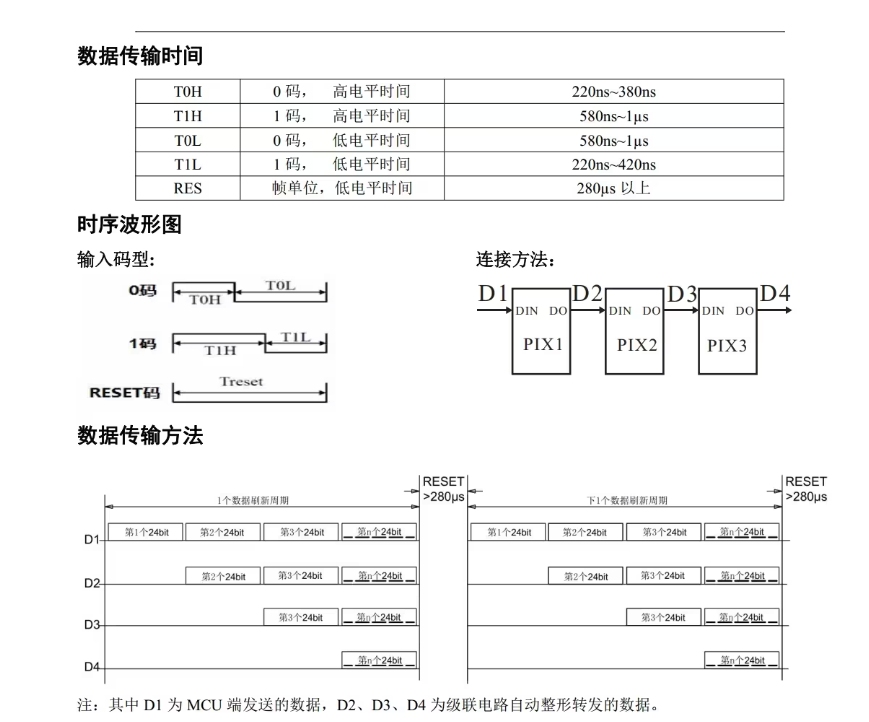
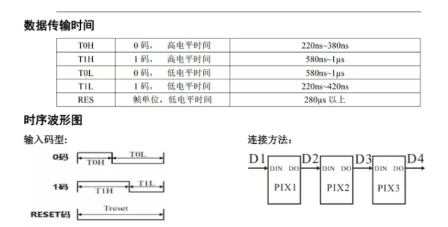
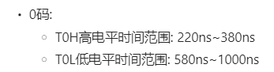
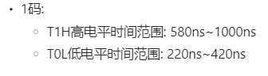
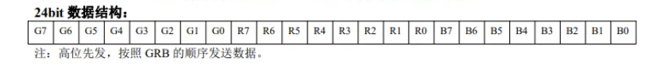
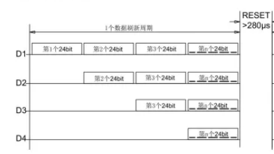
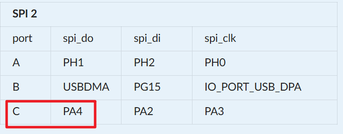
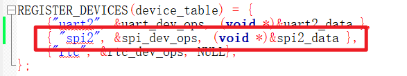

<!DOCTYPE lake>
<p data-lake-id="u7531cbfe" id="u7531cbfe"><span data-lake-id="u83844860" id="u83844860"> WS2812B是一个集控制电路与发光电路于一体的智能外控LED光源。具有较小体积，其外型尺寸与一个3535LED灯珠相同，每个元件即为一个像素点。像素点内部包含了智能数字接口数据锁存信号整形放大驱动电路，还包含有高精度的内部振荡器和可编程定电流控制部分，有效保证了像素点光的颜色高度一致。</span></p><p data-lake-id="ud4a25c36" id="ud4a25c36"><span data-lake-id="u5da07c61" id="u5da07c61">数据协议采用单线归零码的通讯方式，像素点在上电复位以后，DIN端接受从控制器传输过来的数据，首先送过来的24bit数据被第一个像素点提取后，送到像素点内部的数据锁存器，剩余的数据经过内部整形处理电路整形放大后通过DO端口开始转发输出给下一个级联的像素点，每经过一个像素点的传输，信号减少24bit。像素点采用自动整形转发技术，使得该像素点的级联个数不受信号传送的限制，仅仅受限信号传输速度要求。</span></p><p data-lake-id="uc63b72a3" id="uc63b72a3"><span data-lake-id="u48850332" id="u48850332">高达 2KHz 的端口扫描频率，在高清摄像头的捕捉下都不会出现闪烁现象，非常适合高速移动产品的使用。280μs以上的 RESET 时间，出现中断也不会引起误复位，可以支持更低频率,价格便宜的MCU。LED具有低电压驱动、环保节能、亮度高、散射角度大、一致性好超、低功率及超长寿命等优点。将控制电路集成于LED上面，电路变得更加简单，体积小，安装更加简便。  </span></p><p data-lake-id="ua06df441" id="ua06df441"><span data-lake-id="ub18812f5" id="ub18812f5">​</span><br/></p><p data-lake-id="u77f48271" id="u77f48271"></p><p data-lake-id="u2983c2af" id="u2983c2af"><br/></p><p data-lake-id="u5f18c24d" id="u5f18c24d"><span data-lake-id="u39693b57" id="u39693b57">在这个文档里面我们可以看到,要想驱动ws2812,我们就需要给灯发送24位的数据,这24位的数据代表的就是灯的颜色, 这里我们需要注意的是灯的颜色是GRB的顺序.</span></p><p data-lake-id="ufc352546" id="ufc352546"><span data-lake-id="ua84a6d9d" id="ua84a6d9d">我们该如何发送这些数据呢? 在上图中我们可以看到数据虽然是24位, 但是每一位要么是0,要么是1, 我们只需要按照规则发送0码和1码即可.</span></p><p data-lake-id="u2e5586fc" id="u2e5586fc" style="text-align: center"></p><ul list="u711f8865"><li data-lake-id="ue3c8fabb" fid="ueb56675a" id="ue3c8fabb"><span data-lake-id="u79d66a1c" id="u79d66a1c">0码:</span></li></ul><ul data-lake-indent="1" list="u711f8865"><li data-lake-id="u7b4f7d3f" fid="ueb56675a" id="u7b4f7d3f"><span data-lake-id="ucace699a" id="ucace699a">T0H高电平时间范围: 220ns~380ns</span></li><li data-lake-id="u83240790" fid="ueb56675a" id="u83240790"><span data-lake-id="uf14f7d27" id="uf14f7d27">T0L低电平时间范围: 580ns~1000ns</span></li></ul><ul list="u711f8865" start="2"><li data-lake-id="uc07f8d52" fid="ueb56675a" id="uc07f8d52"><span data-lake-id="u662340e9" id="u662340e9">1码:</span></li></ul><ul data-lake-indent="1" list="u711f8865"><li data-lake-id="uf8687335" fid="ueb56675a" id="uf8687335"><span data-lake-id="u82bc68eb" id="u82bc68eb">T1H高电平时间范围: 580ns~1000ns</span></li><li data-lake-id="ua814172a" fid="ueb56675a" id="ua814172a"><span data-lake-id="u70117f3e" id="u70117f3e">T0L低电平时间范围: 220ns~420ns</span></li></ul><p data-lake-id="u390f2158" id="u390f2158"><span data-lake-id="uedd564f7" id="uedd564f7">​</span><br/></p><p data-lake-id="u145a5ae9" id="u145a5ae9"><span data-lake-id="u73704649" id="u73704649">从上面的分析我们可以计算出，一个码的时间范围大概在</span><span data-lake-id="uab0aa972" id="uab0aa972" style="color: #DF2A3F">800ns ~ 1380ns</span><span data-lake-id="u54745950" id="u54745950">之间</span></p><p data-lake-id="uc14eaab1" id="uc14eaab1"><span data-lake-id="u66c1ca4c" id="u66c1ca4c">​</span><br/></p><h2 data-lake-id="TSXsC" id="TSXsC"><span data-lake-id="u74c7fcf1" id="u74c7fcf1">SPI参数计算</span></h2><p data-lake-id="ubb3c055d" id="ubb3c055d"><span data-lake-id="u1df0da5f" id="u1df0da5f">在上面，我们知道发送一个0码或者1码，需要的时长是</span><span data-lake-id="ucd759dc3" id="ucd759dc3" style="color: #DF2A3F">800ns ~ 1380ns</span></p><p data-lake-id="u9468f66e" id="u9468f66e"><span data-lake-id="ubcc190ae" id="ubcc190ae">现在我们想使用SPI来产生这个时长，spi每次要发送8bit的数据，那它的时长要怎样才能和上述时间匹配呢？</span></p><p data-lake-id="u24dc1e3d" id="u24dc1e3d"><span data-lake-id="ub7aecdc6" id="ub7aecdc6">​</span><br/></p><h3 data-lake-id="NHAnY" data-lake-index-type="2" id="NHAnY"><span data-lake-id="u7b954a03" id="u7b954a03">频率计算</span></h3><p data-lake-id="u3ca3a47f" id="u3ca3a47f"><span data-lake-id="u8c614af9" id="u8c614af9">我们每发送8bit的数据，时间范围要限定在</span><span data-lake-id="ue7a188f6" id="ue7a188f6" style="color: #DF2A3F">800ns ~ 1380ns之间，</span><span data-lake-id="ubfb65110" id="ubfb65110"> </span></p><p data-lake-id="u0b7bd72b" id="u0b7bd72b"><span data-lake-id="u45313bd8" id="u45313bd8">那么1bit的时间就是(800ns~1380ns/8) = 100ns~172ns</span></p><p data-lake-id="u06005ece" id="u06005ece"><span data-lake-id="u19b04941" id="u19b04941">​</span><br/></p><p data-lake-id="u87afc52c" id="u87afc52c"><span data-lake-id="u0cf022f2" id="u0cf022f2">间接的我们可以算出来SPI的频率=1s/(100ns~172ns) = 5.8M~10M</span></p><p data-lake-id="ub2b2aa97" id="ub2b2aa97"><span data-lake-id="ubcd09ea7" id="ubcd09ea7">1000 000 000/100ns = 10M</span></p><p data-lake-id="u2e7571ff" id="u2e7571ff"><span data-lake-id="u4bed2298" id="u4bed2298">1000 000 000/170ns = 5.8M</span></p><p data-lake-id="ufea8f4e3" id="ufea8f4e3"><span data-lake-id="ubfc50c20" id="ubfc50c20">​</span><br/></p><p data-lake-id="u547d867f" id="u547d867f"><span data-lake-id="udccd638a" id="udccd638a">所以我们</span><span data-lake-id="u41c2fb4c" id="u41c2fb4c" style="color: #DF2A3F">只需要将SPI的频率缩放到 5.8M~10M</span><span data-lake-id="u8e83e647" id="u8e83e647">之间即可，例如我们将频率设置为8M</span></p><p data-lake-id="u06a7c0de" id="u06a7c0de"><span data-lake-id="u67967cf4" id="u67967cf4">​</span><br/></p><p data-lake-id="ub97e57cb" id="ub97e57cb"><span data-lake-id="u65a5f574" id="u65a5f574">那么我们来计算一下spi发送1个bit所需要的时间：</span></p><p data-lake-id="u23fb41fc" id="u23fb41fc"><span data-lake-id="ub5c337bf" id="ub5c337bf">1000 000 000/8 = 125ns</span></p><p data-lake-id="u2f8c69d9" id="u2f8c69d9"><span data-lake-id="ud6246b13" id="ud6246b13">​</span><br/></p><h3 data-lake-id="L5RAh" data-lake-index-type="2" id="L5RAh"><span data-lake-id="u8cd139f3" id="u8cd139f3">码0计算</span></h3><p data-lake-id="u11351eb4" id="u11351eb4"><span data-lake-id="u48cd7618" id="u48cd7618">按照我们前面的计算</span></p><p data-lake-id="u1d8afaec" id="u1d8afaec"></p><p data-lake-id="u563cac25" id="u563cac25"><span data-lake-id="u85d8ee89" id="u85d8ee89">125ns +125ns</span></p><p data-lake-id="uc74b1709" id="uc74b1709"><span data-lake-id="u149408af" id="u149408af"> 1              1       0  0  0 0 0 0 = 0xC0</span></p><p data-lake-id="u511a9fb6" id="u511a9fb6"><span data-lake-id="uab88a52e" id="uab88a52e">​</span><br/></p><h3 data-lake-id="kXGwm" data-lake-index-type="2" id="kXGwm"><span data-lake-id="u2d4b228f" id="u2d4b228f">码1计算</span></h3><p data-lake-id="ucfab89ea" id="ucfab89ea"></p><p data-lake-id="uae08a478" id="uae08a478"><br/></p><p data-lake-id="ua06b6670" id="ua06b6670"><span data-lake-id="u365bd5d3" id="u365bd5d3">125ns + 125ns + 125ns + 125ns  + 125ns  + 125ns </span></p><p data-lake-id="uf4e8a75f" id="uf4e8a75f"><span data-lake-id="u997f8f8e" id="u997f8f8e">  1             1             1            1            1            1         0   0 = 0xFC</span></p><p data-lake-id="u4f549732" id="u4f549732"><span data-lake-id="ufbdc52b9" id="ufbdc52b9">​</span><br/></p><p data-lake-id="u94c7f4e9" id="u94c7f4e9"><span data-lake-id="ubc9a3e52" id="ubc9a3e52">​</span><br/></p><p data-lake-id="u7bda4724" id="u7bda4724"><span data-lake-id="udca10d6d" id="udca10d6d">也就是说SPI发送0xC0 相当于是0码， 发送0xFC相当于是1码</span></p><p data-lake-id="ua1a3998c" id="ua1a3998c"><span data-lake-id="u0f486044" id="u0f486044">​</span><br/></p><h3 data-lake-id="KdJVv" data-lake-index-type="2" id="KdJVv"><span data-lake-id="ue0f03570" id="ue0f03570">数据推导</span></h3><p data-lake-id="uaddd6509" id="uaddd6509"></p><p data-lake-id="u37e4eb24" id="u37e4eb24"><span data-lake-id="uc1cbd342" id="uc1cbd342">例如我们现在想要给1个灯珠发送绿色数据：1111 1111  0000 0000 0000 0000</span></p><p data-lake-id="uf85c99b2" id="uf85c99b2"><span data-lake-id="u3d4d180f" id="u3d4d180f">它对应的SPI要发送的数据就为：</span></p><p data-lake-id="ud261afbd" id="ud261afbd"><span data-lake-id="ufa1a503f" id="ufa1a503f">[0xFC,0xFC,0xFC,0xFC,0xFC,0xFC,0xFC,0xFC,</span></p><p data-lake-id="u8b4950d6" id="u8b4950d6"><span data-lake-id="u9a27a770" id="u9a27a770">0xC0,0xC0,0xC0,0xC0,0xC0,0xC0,0xC0,0xC0,</span></p><p data-lake-id="u0f466be9" id="u0f466be9"><span data-lake-id="ue2e944f4" id="ue2e944f4">0xC0,0xC0,0xC0,0xC0,0xC0,0xC0,0xC0,0xC0]</span></p><p data-lake-id="u76b837fb" id="u76b837fb"><span data-lake-id="u1e8c085a" id="u1e8c085a">​</span><br/></p><h3 data-lake-id="NeksA" data-lake-index-type="2" id="NeksA"><span data-lake-id="u58e5748f" id="u58e5748f">数据更新</span></h3><p data-lake-id="ud6930515" id="ud6930515"></p><p data-lake-id="u2b7e95bd" id="u2b7e95bd"><span data-lake-id="ue7296eb5" id="ue7296eb5">仔细观察上面这个图，如果我们想更新数据的话，还需要发送280us的延时，实际上我们需要发送280个0码就可以了，这个地方根据所选择的ws2812不同而不同，在数据手册里面一般都有写有的是80us以上，有的是100us以上，需要多少us，我们就发送多少个0xC0</span></p><p data-lake-id="u4b2fa042" id="u4b2fa042"><br/></p><p data-lake-id="u68fa8ba6" id="u68fa8ba6"><br/></p><h3 data-lake-id="SXZwq" data-lake-index-type="2" id="SXZwq"><span data-lake-id="u1d99870d" id="u1d99870d">杰理AC791N示例</span></h3><p data-lake-id="uaea35880" id="uaea35880"><span data-lake-id="u4a4651a6" id="u4a4651a6">我们以杰理AC7916A为例，我们先对SPI进行配置,需要将SPI的频率设置为8M，其余参考上述文档配置</span></p><p data-lake-id="ud9a4c49d" id="ud9a4c49d"><br/></p><h4 data-lake-id="AiiTg" data-lake-index-type="2" id="AiiTg"><span data-lake-id="ufa33b974" id="ufa33b974">SPI配置</span></h4><p data-lake-id="ucaf5d0da" id="ucaf5d0da"><span data-lake-id="ufc9bbcf7" id="ufc9bbcf7">首先，我们将WS2812的灯接在PA4引脚上面</span></p><p data-lake-id="u6dad69d3" id="u6dad69d3"></p><p data-lake-id="ub6edbc4f" id="ub6edbc4f"><span data-lake-id="ufbf8bcd3" id="ufbf8bcd3">然后我们在board.c中对SPI进行配置，参考如下配置，频率为8M，模式为单线模式，端口选择C口。</span></p><span class="yuque-card-unsupported">[codeblock]</span><p data-lake-id="u532f251a" id="u532f251a"><span data-lake-id="u3f3bc808" id="u3f3bc808">做了上述操作之后，我们还要记得在board.c文件中注册设备</span></p><p data-lake-id="u4737c276" id="u4737c276"></p><p data-lake-id="u6204a7ad" id="u6204a7ad"><span data-lake-id="u3c35d023" id="u3c35d023">​</span><br/></p><h4 data-lake-id="Tcv9a" data-lake-index-type="2" id="Tcv9a"><span data-lake-id="u1e9259f8" id="u1e9259f8">驱动代码</span></h4><h5 data-lake-id="Guz6p" data-lake-index-type="2" id="Guz6p"><span data-lake-id="u95818345" id="u95818345">导入头文件</span></h5><span class="yuque-card-unsupported">[codeblock]</span><h5 data-lake-id="yzcGO" data-lake-index-type="2" id="yzcGO"><span data-lake-id="ub632c1aa" id="ub632c1aa">声明常量</span></h5><span class="yuque-card-unsupported">[codeblock]</span><h5 data-lake-id="Tezrb" data-lake-index-type="2" id="Tezrb"><span data-lake-id="ub54e464e" id="ub54e464e">设置颜色函数</span></h5><span class="yuque-card-unsupported">[codeblock]</span><h5 data-lake-id="Ss3Lg" data-lake-index-type="2" id="Ss3Lg"><span data-lake-id="uf8b9d5ba" id="uf8b9d5ba">发送颜色函数</span></h5><span class="yuque-card-unsupported">[codeblock]</span><p data-lake-id="ud2987cb5" id="ud2987cb5"><span data-lake-id="u62af5b68" id="u62af5b68">​</span><br/></p><h5 data-lake-id="qiNZJ" data-lake-index-type="2" id="qiNZJ"><span data-lake-id="u20a1be05" id="u20a1be05">测试代码</span></h5><p data-lake-id="ub21e3610" id="ub21e3610"><span data-lake-id="u18fe842b" id="u18fe842b">​</span><br/></p><span class="yuque-card-unsupported">[codeblock]</span><p data-lake-id="u7a3ff58a" id="u7a3ff58a"><span data-lake-id="u6e8b6545" id="u6e8b6545"><br><br/></br></span></p>